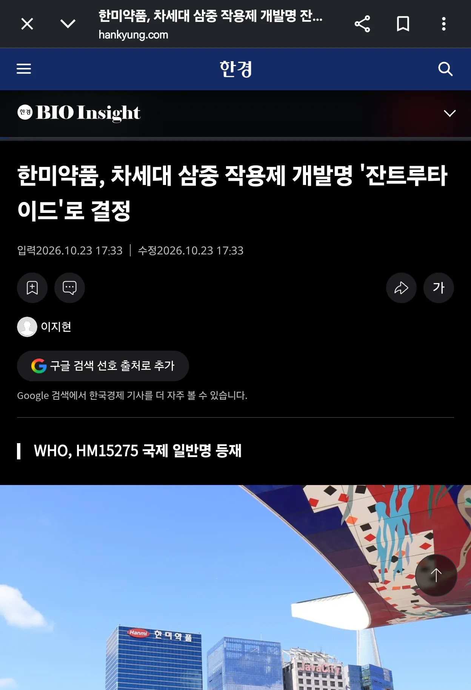

사실 이미 차세대 치료제도 개발 중이라고 함
마운자로 다음 세대인 레타랑 똑같이 삼중 작용제라고 함
하지만 지금 겨우 FDA 2상 중이고, 2상이 내년 상반기 종료 예정이라
이미 내년에 1분기 출시 확정 마운자로 다음 세대 레타랑 다르게
최소 3~5년 추가로 걸릴 예정
당연히 마운자로랑 똑같은 수순으로 레타도 막을 것 같다고 함
신토불이 강요는 계속 된다 ㄷㄷㄷ

사실 이미 차세대 치료제도 개발 중이라고 함
마운자로 다음 세대인 레타랑 똑같이 삼중 작용제라고 함
하지만 지금 겨우 FDA 2상 중이고, 2상이 내년 상반기 종료 예정이라
이미 내년에 1분기 출시 확정 마운자로 다음 세대 레타랑 다르게
최소 3~5년 추가로 걸릴 예정
당연히 마운자로랑 똑같은 수순으로 레타도 막을 것 같다고 함
신토불이 강요는 계속 된다 ㄷㄷㄷ
본사구요ㅋㅋ 직급도 그렇게 낮지 않습니다
끝까지 정신승리하시는 모습 보기 좋네요
나라에서 뚱땡이들은 돈 더 내라는데요? ㅋㅋ
뚱땡이들은 왜 차별받고도 가만히 있냐
에페는 애초에 막다가 너무 개발 늦어지니깐 민림달래기용으로 낸거같음
혹시 4차 협력업체 생산직쯤 되는 말단이지만 업계 관계자라고 착각중이신게 아닐지도 의심이 되는 상황이네요ㅋㅋ